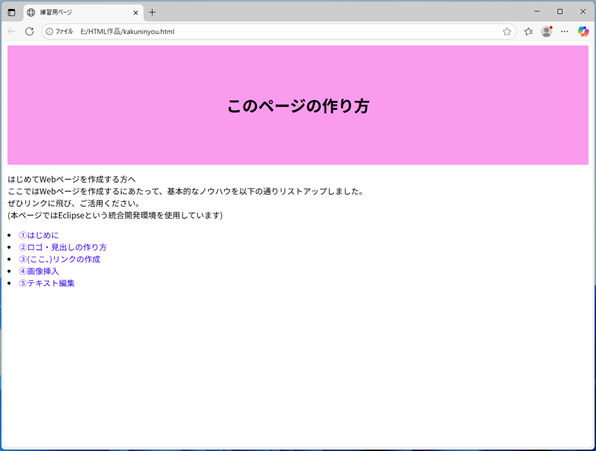
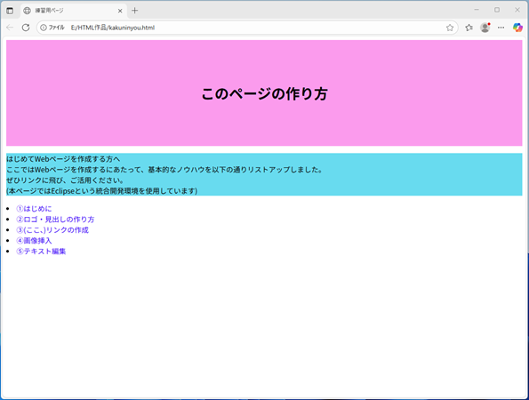
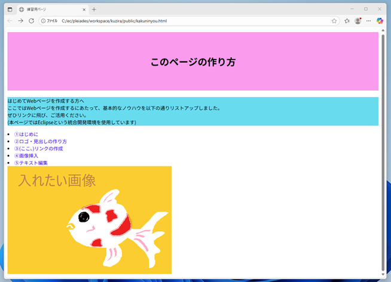

ここからCSSを作成します🌸
CSSは、HTMLにスタイル機能を提供する言語です
1️⃣≪準備です≫
まずは、｢①はじめに｣で｢index.html｣を作成した要領で、同じ場所に今度は｢style.css｣を作成しましょう。
今回は、『新規→CSSファイル→保存先を確認後、名前を入れて完了』です。
｢@charset "UTF-8";｣だけ自動入力されたファイルができあがれば成功です！
(このファイルの中に、ページの｢見た目｣を整える設定を行います)
2️⃣次に、そこに書いたルールを、先程まで作成していた｢index.html｣に関連付けると宣言します！
これは｢index.html｣に追記します！
ここでは、<link>タグを使用します
構文としては、<link rel="stylesheet" href="○○.css">です
rel="stylesheet"は、リンク先がスタイルシートであることを示しています。
href="○○.css"は、読み込むCSSファイルのパス（相対パスや絶対パス）です。
🌱終了タグはありません。
※このケースの相対パスや絶対パスについてはこちら
基本的に入力する場所は、｢index.html｣の<head>タグの中です。
<title>の下に、以下を追記しましょう！
<link rel="stylesheet" href="style.css">
(○○には、今回はstyleが入り、『<link rel="stylesheet" href="style.css">』と記述することのなりますが、
もしご自身で作ったCSSファイルの名前が別でしたら、適宜調整してくださいね)
1 <!DOCTYPE html>
2 <html>
3 <head>
4 <meta charset="UTF-8">
5 <title>あなたが付けたタイトル</title>
6 <link rel="stylesheet" href="style.css">
7 </head>
8 <body>
9 <header>
10 <h1>このページの作り方</h1>
11 </header>
12
13 <main>
14 <p>はじめてWebページを作成する方へ<br>
15 ここではWebページを作成するにあたって、基本的なノウハウを以下の通りリストアップしました。<br>
16 ぜひリンクに飛び、ご活用ください。<br>
17 (本ページではEclipseという統合開発環境を使用しています)
18 </p>
19
20 <nav>
21 <lu>
22 <li><a href="first.html">①はじめに</a></li>
23 <li><a href="logo.html">②ロゴ・見出しの作り方</a></li>
24 <li><a href="link.html">③(ここ、)リンクの作成</a></li>
25 <li><a href="img.html">④画像挿入</a></li>
26 <li><a href="text.html">⑤テキスト編集</a></li>
27 </lu>
28 </nav>
29
30 <img src="images/sample.png" alt="サンプル画像">
31 </main>
32
33 <footer>
34
35 </footer>
36
37 </body>
38 </html>
これで｢style.css｣に書く内容が反映されます！
3️⃣コメント挿入
次は｢style.css｣に記述します。
cssにコメントを残すには、『/* コメント */』と、/* と */ で囲みます！
｢○○.html｣のコメントとは書き方が異なりますのでご注意ください。
③リンクの作成では、｢○○.html｣を複数作成しましたね。
｢○○.html｣を複数作成しても、｢style.css｣は1つでいいので、この部分はこの設定…という風に、後からどの部分にどんなスタイルを適用しているか分かるようにしておきましょう。
今回は以下の通りにコメントをしておきましょう
1 @charset "UTF-8";
2 /* 全てのページに適用 */
3
4 /* 全てのページに適用-ヘッダー */
5
6 /* 全てのページに適用-メイン */
7
8 /* 全てのページに適用-フッター */
9
10 /* 個別設定 */
4️⃣それではまず、｢このページの作り方｣の部分を設定しましょう！
前項:③リンクの作成で、<body>の中に<header>を挿入しましたね。
これを利用します。
書く場所は引き続き｢style.css｣です。
構文としては、『セレクタ{ }』と宣言し、セレクタには対象となる要素を選択。｛ ｝内には各設定を記述します。
さきほど/* 全てのページに適用-ヘッダー */とコメントした部分の下に
header{ text-align: center; padding-top: 75px; padding-bottom: 75px; background-color: rgb(250, 160, 240); }
と記述してみましょう
この、『text-align: center;』 と記述することで文字が中央揃えになります。
背景色は、『background-color: ○○;』で○○に指定した色になります。
背景色の範囲は、『padding-top: ○○px;』、『padding-bottom: ○○px;』で、コンテンツの上下の領域を指定します。
ちなみに中央揃えは『text-align: center;』でしたが、
左揃えだと『text-align: left;』、
右揃えだと『text-align: right;』です。
1 @charset "UTF-8";
2 /* 全てのページに適用 */
3
4 /* 全てのページに適用-ヘッダー */
5 header{
6 text-align: center;
7 padding-top: 75px;
8 padding-bottom: 75px;
9 background-color: rgb(250, 160, 240);
10 }
11
12 /* 全てのページに適用-メイン */
13
14 /* 全てのページに適用-フッター */
15
16 /* 個別設定 */
この範囲の指定には、ボックスモデルというものが使用されていますが、ボックスモデルについてはこちら
index.htmlのブラウザページを更新してみると、以下の様になります↓
5️⃣次は、はじめてWebページを作成する方へ
ここではWebページを作成するにあたって、～～以降省略 の部分です
｢style.css｣の/* 全てのページに適用-メイン */とコメントした部分の下に
main p{
background-color: rgb(100, 220, 240);
}
と記述してみましょう
1 @charset "UTF-8";
2 /* 全てのページに適用 */
3
4 /* 全てのページに適用-ヘッダー */
5 header{
6 text-align: center;
7 padding-top: 75px;
8 padding-bottom: 75px;
9 background-color: rgb(250, 160, 240);
10 }
11
12 /* 全てのページに適用-メイン */
13 main p{
14 background-color: rgb(100, 220, 240);
15 }
16
17 /* 全てのページに適用-フッター */
18
19 /* 個別設定 */
今回は、background-color: rgb(100, 220, 240);で、背景を水色にする設定のみ行っています。
『padding-top: ○○px;』、『padding-bottom: ○○px;』で、コンテンツの上下の領域を指定していませんので、
コンテンツの上下には塗りつぶしがなされず、<p>タブ部分のみ色が付きましたね。

ちなみに、この4️⃣、5️⃣はヘッダーやフッダーでひとまとめに編集するだけでなく、
.htmlのプログラムに、部分的に目印を付けてその部分だけ個別のスタイルを設定することも可能です。
その場合、クラス属性を利用してcssを設定します。
構文としては、『class="クラス属性の値"』です。
<h1>このページの作り方</h1>の最初のh1の後ろに半角スペースを入力後、class="○○"と、好きな属性の値を入力します！
今回は"logo"と付けてみましょう！
その部分だけ抜粋すると↓
<!-- ヘッダーここから -->
<header>
<h1 class="logo">このページの作り方</h1>
</header>
これで、この見出しにはlogoというクラス名を付けることができました。
そして｢style.css｣の中にこのlogoクラスの設定をどうするのか記述します。
書き方としては、『.logo{ }』と宣言し、｛ ｝内に各設定を記述します。
あとは上記同様、『text-align: center;』 と記述すると文字が中央揃えに。
背景色は、『background-color: ○○;』で○○に指定した色に。
背景色の範囲は、『padding-top: ○○px;』、『padding-bottom: ○○px;』で、コンテンツの上下の領域を指定します。
｢style.css｣の中には以下を入力します
/* 全てのページに適用-ヘッダー */
.logo{
text-align: center;
padding-top: 75px;
padding-bottom: 75px;
background-color: rgb(250, 160, 240);
}
logoクラスの"このページの作り方"部分の背景(ピンク)が設定できました🌸
どんどんいきましょう！
次はすぐ下の<p>タグに好きなクラス名を付けましょう！
今回は"aisatu"と付け、以下の様に追記してみます。
<まずはindex.html側>
<p>はじめてWebページを～～</p>の最初のpの後ろに半角スペースを入力後、class="aisatu"と付けてみましょう！
<p class="aisatu">はじめてWebページを作成する方へ<br>
ここではWebページを作成するにあたって、～～以降省略
</p>
更に、｢style.css｣の中にも追記してみましょう！
/* 全てのページに適用-ヘッダー */
.logo{
text-align: center;
padding-top: 75px;
padding-bottom: 75px;
background-color: rgb(250, 160, 240);
}
.aisatu{
background-color: rgb(100, 220, 240);
}
.aisatuのクラスに色指定のみ追記しています。
同じように、コンテンツの上下には塗りつぶしがなされず、<p>タブ部分のみ色が付きました。
おまけ
今回は<header>や<fooder>、<main>等のグループごとに飾りつけの設定をしましたが、
他にもHTMLでは以下のようなタグも定義されています。
- <div> …特に意味を持たず要素をグループ化する
- <nav> …ページ内のナビゲーション
- <article> …記事・投稿など独立した内容
- <section> …汎用セクション。<div>より少し重要な意味合い
- <aside> …補足情報や、本題とは少し離れる情報(広告や関連記事など)
6️⃣また、前項④画像挿入でお好きな画像を入れられた方は、以下の様になっているかと思います。↓
このままでは試しに入れた画像(金魚)がつめつめで気持ち悪いですよね。
画像の上に余白を入れましょう！
画像の場合は、まずindex.html側では
<img src="images/sample.png" alt="画像サンプル">の後ろの部分に半角スペースを入力後、 class="img-margin"を挿入します！
<img src="images/sample.png" alt="画像サンプル" class="img-margin">です
1 <!DOCTYPE html>
2 <html>
3 <head>
4 <meta charset="UTF-8">
5 <title>あなたが付けたタイトル</title>
6 <link rel="stylesheet" href="style.css">
7 </head>
8 <body>
9 <header>
10 <h1>このページの作り方</h1>
11 </header>
12
13 <main>
14 <p>はじめてWebページを作成する方へ<br>
15 ここではWebページを作成するにあたって、基本的なノウハウを以下の通りリストアップしました。<br>
16 ぜひリンクに飛び、ご活用ください。<br>
17 (本ページではEclipseという統合開発環境を使用しています)
18 </p>
19
20 <nav>
21 <lu>
22 <li><a href="first.html">①はじめに</a></li>
23 <li><a href="logo.html">②ロゴ・見出しの作り方</a></li>
24 <li><a href="link.html">③(ここ、)リンクの作成</a></li>
25 <li><a href="img.html">④画像挿入</a></li>
26 <li><a href="text.html">⑤テキスト編集</a></li>
27 </lu>
28 </nav>
29
30 <img src="images/sample.png" alt="サンプル画像" class="img-margin">
31 </main>
32
33 <footer>
34
35 </footer>
36
37 </body>
38 </html>
更に、｢style.css｣の中には今度はpaddingではなく、marginを指定します。
/* 全てのページに適用-メイン */とコメントした部分の中に
.img-margin {
margin-top: 20px;
}
と記述してみましょう
1 @charset "UTF-8";
2 /* 全てのページに適用 */
3
4 /* 全てのページに適用-ヘッダー */
5 header{
6 text-align: center;
7 padding-top: 75px;
8 padding-bottom: 75px;
9 background-color: rgb(250, 160, 240);
10 }
11
12 /* 全てのページに適用-メイン */
13 main p{
14 background-color: rgb(100, 220, 240);
15 }
16 .img-margin {
17 margin-top: 20px;
18 }
19
20 /* 全てのページに適用-フッター */
21
22 /* 個別設定 */
リストと画像の間に、20pxの余白を入れることができました。
是非、皆さんの素敵な画像挿入の際に、この余白の設定についてもご活用ください★
余白の領域の設定時にも、ページ上部で出てきたボックスモデルを使用しています。
改めまして、ボックスモデルについてはこちら
おまけ
前項④画像挿入の中で、画像はコンテンツの背景としても挿入可能と述べました。↓
これらの各＜CSS側＞コードを以下に記します。
①＜CSS側＞（画像並列）
/* ヘッダー */
header {
text-align: center;
padding-top: 75px;
padding-bottom: 75px;
background-image: url("../images/sample.png");
background-size: auto; /* 画像を元のサイズで表示 */
background-position: left center; /* 左に配置 */
background-repeat: repeat-x; /* 画像を横方向に繰り返す */
}
②＜CSS側＞（画像並列しない）
/* ヘッダー */
header {
text-align: center;
padding-top: 75px;
padding-bottom: 75px;
background-image: url("../images/sample.png");
background-size: cover; /* 要素全体をカバー */
background-position: center; /* 中央に配置 */
background-repeat: no-repeat; /* 繰り返しなし */
}
※HTML側は、以下の通り、headerが設定されておれば問題ないです↓
/* ヘッダー */
header {
text-align: center;
padding-top: 75px;
padding-bottom: 75px;
background-image: url("../images/sample.png");
background-size: auto; /* 画像を元のサイズで表示 */
background-position: left center; /* 左に配置 */
background-repeat: repeat-x; /* 画像を横方向に繰り返す */
}
/* ヘッダー */
header {
text-align: center;
padding-top: 75px;
padding-bottom: 75px;
background-image: url("../images/sample.png");
background-size: cover; /* 要素全体をカバー */
background-position: center; /* 中央に配置 */
background-repeat: no-repeat; /* 繰り返しなし */
}
<header>
<h1>このページの作り方</h1>
</header>
おまけ-2
アニメーション画像について↓
今回使用したコードを以下の通り公開します。
また、これについては新しいファイルを作成する必要があります！
index.htmlを保存している場所に、『js』というファイルを作成してください。
その中に、「script.js」というファイルを作成します。
Eclipseでの作成手順は、
新規→その他→一般→ファイル→ファイル名：script.js→保存先が「js/」になっているか確認→完了
＜HTML側＞
<!-- ★ アニメーション画像を表示する部分 -->
<div id="slide-container">
<img id="slide-image" src="" alt="アニメーション画像">
</div>
＜CSS側＞
/* ★ アニメーション用の画像コンテナと画像 */
#slide-container {
position: relative;
width: 100%;
height: 300px;
overflow: hidden;
margin-top: 40px;
}
#slide-image {
position: absolute;
top: 50%;
transform: translateY(-50%);
height: 200px;
opacity: 0;
transition: left 0.5s ease, opacity 0.5s;
}
＜js/script.js側＞
const imagePaths = [
"images/画像1.png",
"images/画像2.png",
"images/画像3.png"
];
const img = document.getElementById("slide-image");
function showImage(index) {
return new Promise((resolve) => {
img.src = imagePaths[index];
img.style.opacity = "0";
img.style.left = "100%";
img.style.transform = "translateY(-50%)";
const delay = index === 0 ? 3000 : 1500;
setTimeout(() => {
img.style.opacity = "1";
setTimeout(() => {
img.style.left = "50%";
img.style.transform = "translate(-50%, -50%)";
}, 1000);
setTimeout(() => {
img.style.left = "0%";
img.style.transform = "translate(0%, -50%)";
}, 2000);
setTimeout(() => {
resolve();
}, 3000);
}, delay);
});
}
async function startAnimation() {
while (true) {
for (let i = 0; i < imagePaths.length; i++) {
await showImage(i);
img.style.opacity = "0";
await new Promise(resolve => setTimeout(resolve, 500));
}
img.style.opacity = "0";
img.style.left = "100%";
img.style.transform = "translateY(-50%)";
await new Promise(resolve => setTimeout(resolve, 500));
}
}
window.onload = () => {
startAnimation();
};
<!-- ★ アニメーション画像を表示する部分 -->
<div id="slide-container">
<img id="slide-image" src="" alt="アニメーション画像">
</div>
/* ★ アニメーション用の画像コンテナと画像 */
#slide-container {
position: relative;
width: 100%;
height: 300px;
overflow: hidden;
margin-top: 40px;
}
#slide-image {
position: absolute;
top: 50%;
transform: translateY(-50%);
height: 200px;
opacity: 0;
transition: left 0.5s ease, opacity 0.5s;
}
const imagePaths = [
"images/画像1.png",
"images/画像2.png",
"images/画像3.png"
];
const img = document.getElementById("slide-image");
function showImage(index) {
return new Promise((resolve) => {
img.src = imagePaths[index];
img.style.opacity = "0";
img.style.left = "100%";
img.style.transform = "translateY(-50%)";
const delay = index === 0 ? 3000 : 1500;
setTimeout(() => {
img.style.opacity = "1";
setTimeout(() => {
img.style.left = "50%";
img.style.transform = "translate(-50%, -50%)";
}, 1000);
setTimeout(() => {
img.style.left = "0%";
img.style.transform = "translate(0%, -50%)";
}, 2000);
setTimeout(() => {
resolve();
}, 3000);
}, delay);
});
}
async function startAnimation() {
while (true) {
for (let i = 0; i < imagePaths.length; i++) {
await showImage(i);
img.style.opacity = "0";
await new Promise(resolve => setTimeout(resolve, 500));
}
img.style.opacity = "0";
img.style.left = "100%";
img.style.transform = "translateY(-50%)";
await new Promise(resolve => setTimeout(resolve, 500));
}
}
window.onload = () => {
startAnimation();
};
以上で、ホームページに掲げた最低限のページの作成(+画像挿入)は終了です！お疲れさまでした！
実用的なレベルにはとても達成できませんでしたが、ぼちぼち学んでいけたらと思います。
そして、ここまでで掲載できなかったノウハウは、ホームページの下部に、『番外編(レジュメ)』として、今後増やしていきたいと思います。